library(tidyverse)
library(palmerpenguins)
library(ggbeeswarm)
library(broom) # For tidying statistical output
library(styler)
library(lintr)Mistyrose_P1_Week3lab
Introduction
In this lab, we explore data visualization using ggplot2, focusing on two main tasks. First, we analyze the bill lengths of Pygoscelis penguins using various visualization techniques. Second, we find a dataset to demonstrate techniques for mitigating overplotting in scatter plots.
1. Visualizing the Distribution of Quantitative Data: Bill Lengths of Pygoscelis Penguins
Pygoscelis penguins, also known as brush-tailed penguins, are a genus found in the Antarctic and subantarctic regions. They are characterized by their black and white plumage and a unique swimming technique called porpoising. This genus includes three species: the Adélie penguin (Pygoscelis adeliae), the gentoo penguin (Pygoscelis papua), and the chinstrap penguin (Pygoscelis antarcticus).
Let’s load the necessary libraries first:
1.1 Remove Missing Values
First, let’s examine the penguin dataset and then remove penguins with missing bill length measurements to avoid ggplot2 warning messages in subsequent tasks.
# Look at the first few rows of the dataset
head(penguins)# A tibble: 6 × 8
species island bill_length_mm bill_depth_mm flipper_length_mm body_mass_g
<fct> <fct> <dbl> <dbl> <int> <int>
1 Adelie Torgersen 39.1 18.7 181 3750
2 Adelie Torgersen 39.5 17.4 186 3800
3 Adelie Torgersen 40.3 18 195 3250
4 Adelie Torgersen NA NA NA NA
5 Adelie Torgersen 36.7 19.3 193 3450
6 Adelie Torgersen 39.3 20.6 190 3650
# ℹ 2 more variables: sex <fct>, year <int># Filter out rows with missing bill_length_mm values
penguins_clean <- penguins %>%
filter(!is.na(bill_length_mm))
# Check how many rows were removed
cat("Original number of rows:", nrow(penguins), "\n")Original number of rows: 344 cat("Number of rows after removing NAs:", nrow(penguins_clean), "\n")Number of rows after removing NAs: 342 cat("Number of rows removed:", nrow(penguins) - nrow(penguins_clean), "\n")Number of rows removed: 2 # Confirm no missing values remain
sum(is.na(penguins_clean$bill_length_mm))[1] 01.2 Scatter Plot of Species versus Bill Length
Now, let’s create a scatter plot displaying bill length on the x-axis and species on the y-axis.
# Create a universal function to plot graphs
plt_function <- function(
...,
title = "",
subtitle = "",
x_label = "",
y_label = "",
caption = "",
color = ""
) {
... +
labs(
title = title,
subtitle = subtitle,
x = x_label,
y = y_label,
caption = caption,
color = color
) +
theme_minimal()
}
# Create a basic scatter plot
scatter_plot <- plt_function(
ggplot(penguins_clean, aes(x = bill_length_mm, y = species)) +
geom_point(),
title = "Bill Length by Penguin Species",
x_label = "Bill Length (mm)",
y_label = "Species",
caption = "Source: Gorman et al. (2014)"
)
# Display the plot
scatter_plot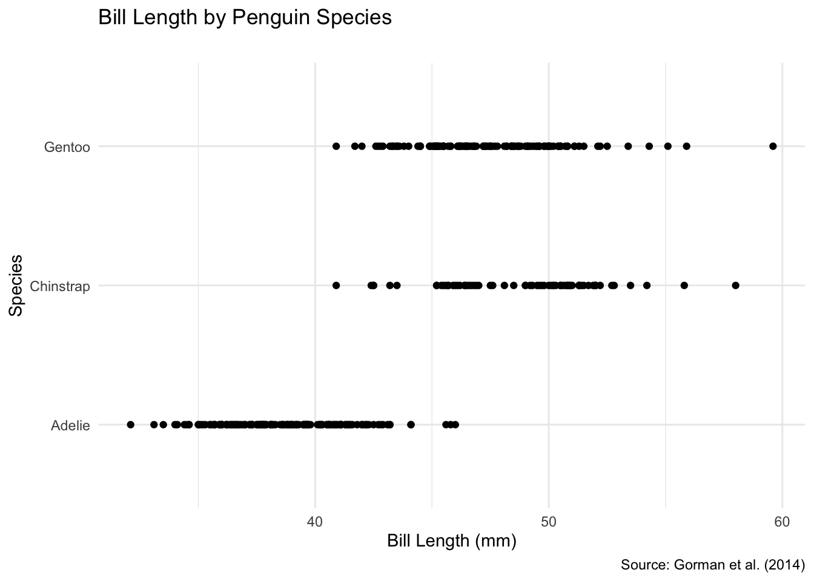
1.3 Why Should You Jitter the Plot?
Let’s examine why jittering might be beneficial for this scatter plot by checking if there are individuals with identical bill length and species values.
# Count occurrences of each bill length and species combination
duplicates <- penguins_clean %>%
group_by(species, bill_length_mm) %>%
summarize(count = n(), .groups = "drop") %>%
filter(count > 1) %>%
arrange(desc(count))
# Display the duplicates
duplicates# A tibble: 84 × 3
species bill_length_mm count
<fct> <dbl> <int>
1 Adelie 41.1 7
2 Adelie 37.8 5
3 Adelie 39.6 5
4 Adelie 36 4
5 Adelie 38.1 4
6 Adelie 39.7 4
7 Adelie 40.6 4
8 Gentoo 45.2 4
9 Gentoo 45.5 4
10 Gentoo 46.2 4
# ℹ 74 more rows# Calculate the percentage of observations that have duplicates
total_duplicated_points <- sum(duplicates$count)
cat("Number of points with identical values:", total_duplicated_points, "\n")Number of points with identical values: 218 cat(
"Percentage of dataset with duplicates:",
round(total_duplicated_points / nrow(penguins_clean) * 100, 2), "%\n"
)Percentage of dataset with duplicates: 63.74 %Jittering is beneficial because there are multiple penguins with identical bill length and species combinations. In the scatter plot, these points overlap, making it impossible to see the true density of observations at each location. Jittering adds small random noise to the position of each point, allowing us to see all observations.
1.4 Jitter Plot
Let’s create a jitter plot with reduced opacity and appropriate jittering parameters.
# Create a jitter plot
jitter_plot <- plt_function(
ggplot(penguins_clean, aes(x = bill_length_mm, y = species)) +
geom_jitter(alpha = 0.4, width = 0.3, height = 0.3),
title = "Bill Length by Penguin Species (Jittered)",
x_label = "Bill Length (mm)",
y_label = "Species",
caption = "Source: Gorman et al. (2014)"
)
# Display the plot
jitter_plot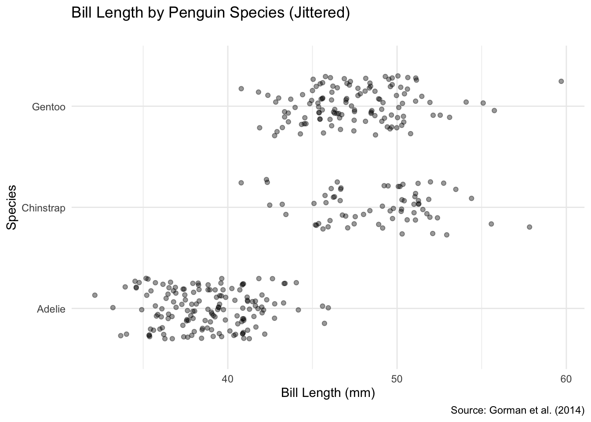
1.5 Bee-Swarm Plot
Now, let’s use the geom_beeswarm() function to create a bee-swarm plot.
# Create a bee-swarm plot
beeswarm_plot <- plt_function(
ggplot(penguins_clean, aes(x = bill_length_mm, y = species)) +
geom_beeswarm(),
title = "Bill Length by Penguin Species (Bee-Swarm)",
x_label = "Bill Length (mm)",
y_label = "Species",
caption = "Source: Gorman et al. (2014)"
)
# Display the plot
beeswarm_plot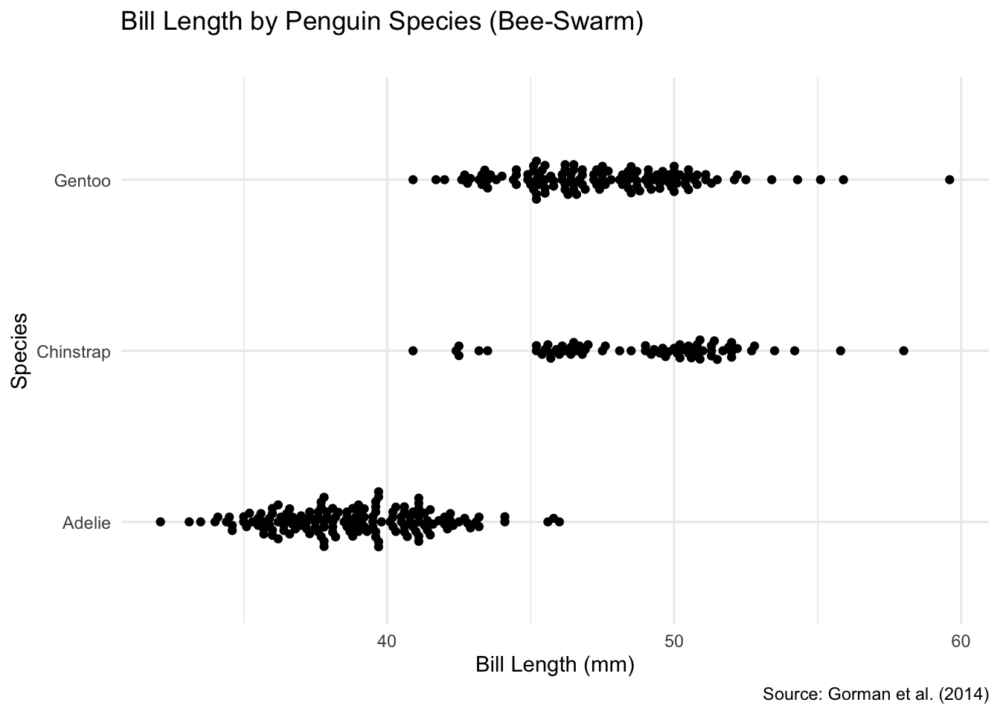
1.6 Pros and Cons of Bee-Swarm Plots
Advantage of bee-swarm plot over jitter plot: The bee-swarm plot arranges points in a deterministic way that prevents overlap while preserving the exact x-position (bill length) of each point. Unlike a jitter plot, which introduces random displacement that can sometimes give a misleading impression of the data points’ true values, a bee-swarm plot provides a clearer representation of the distribution and density at specific bill lengths for each species.
Disadvantage of bee-swarm plot over jitter plot: Bee-swarm plots can take up more vertical space when there are many points with similar x-values, potentially making the plot harder to read if there are many data points. The algorithm tries to pack the points tightly, which might lead to irregular or less easily interpretable shapes compared to a more straightforward jitter plot. Additionally, bee-swarm plots can be computationally more intensive to generate than simple jitter plots, especially for large datasets.
1.7 Violin Plot with Boxes
Let’s combine a violin plot and a box plot in one graph.
combined_violin_box <- plt_function(
ggplot(penguins_clean, aes(x = bill_length_mm, y = species)) +
geom_violin(alpha = 0.6) +
geom_boxplot(width = 0.2, fill = "white"),
title = "Bill Length Distribution by Penguin Species",
subtitle = "Violin Plot with Box Plot",
x_label = "Bill Length (mm)",
y_label = "Species",
caption = "Source: Gorman et al. (2014)"
)
combined_violin_box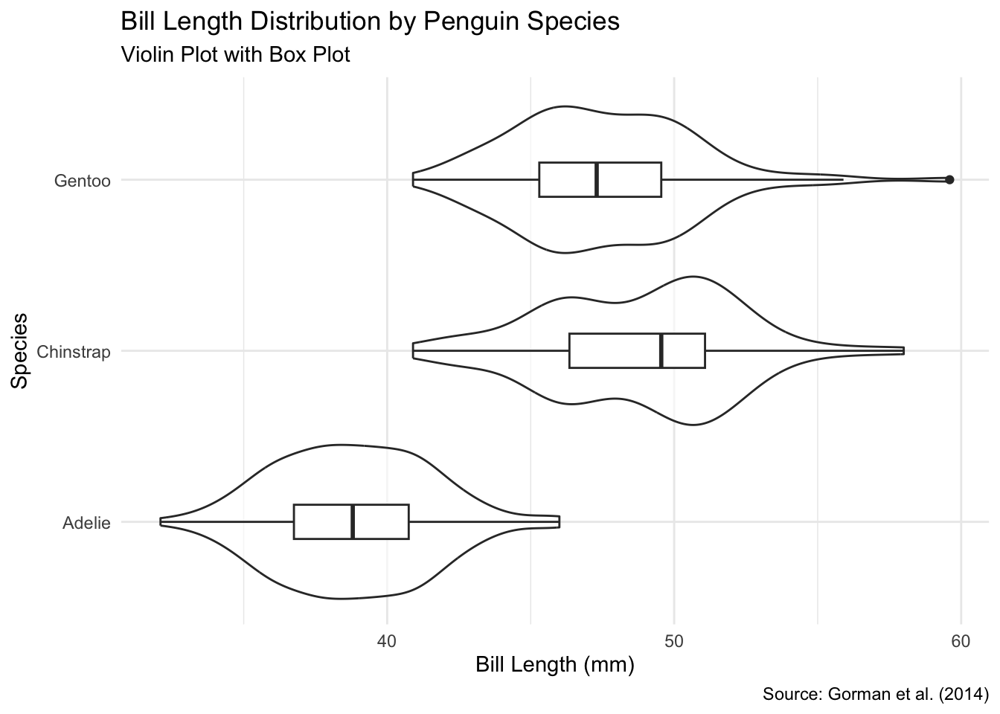
1.8 What Does a Violin Plot Add to a Box Plot?
A violin plot enhances a box plot by showing the full distribution of the data using a mirrored density plot. This reveals: - Whether the distribution is skewed - If there are multiple modes (peaks) - The shape and spread of the data beyond quartiles and median
While a box plot shows the median, quartiles, and potential outliers, it doesn’t reveal the shape of the distribution. The violin plot’s width at each point represents the density of data at that value, showing whether the distribution is bimodal, skewed, or has unusual features. This allows us to see if data clusters around certain values or if there are multiple peaks in the distribution, information that would be hidden in a standard box plot.
1.9 Frequency Polygons with Rug Plot
Let’s create frequency polygons with a rug plot for all three species.
frequency_plot <- plt_function(
ggplot(penguins_clean, aes(x = bill_length_mm, color = species)) +
geom_freqpoly(binwidth = 2, linewidth = 1) +
geom_rug(aes(y = 0), sides = "b", alpha = 0.5),
title = "Frequency Polygon of Bill Lengths with Rug Plot",
x_label = "Bill Length (mm)",
y_label = "Count",
color = "Species"
) +
scale_color_manual(values = c(
"Adelie" = "#1f77b4",
"Chinstrap" = "#ff7f0e",
"Gentoo" = "#2ca02c"
))
frequency_plot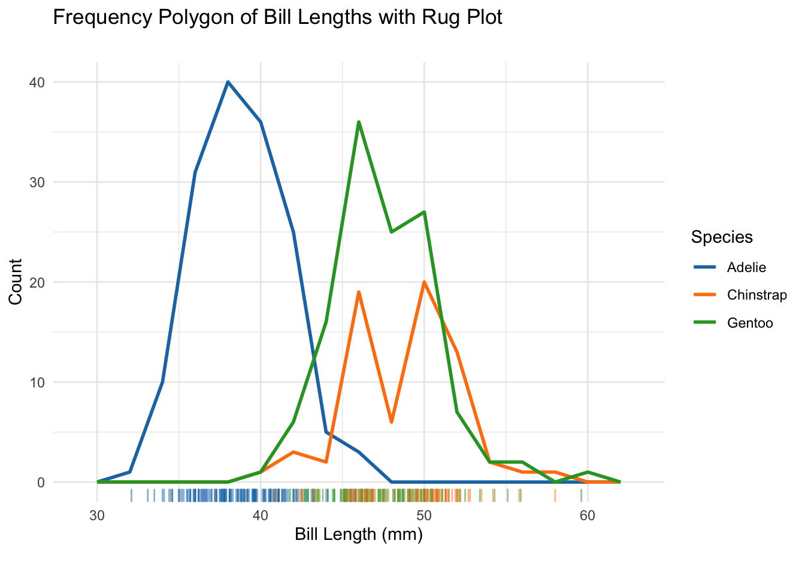
1.10 Faceted Frequency Polygons with Rug Plots
Now, let’s create a faceted plot with frequency polygons and rug plots.
faceted_freq_plot <- plt_function(
ggplot(penguins_clean, aes(x = bill_length_mm)) +
geom_freqpoly(binwidth = 2, color = "steelblue", linewidth = 1) +
geom_rug(aes(y = 0), sides = "b", alpha = 0.5, color = "steelblue") +
facet_wrap(~species, scales = "fixed"),
title = "Faceted Frequency Polygons with Rug Plots by Species",
x_label = "Bill Length (mm)",
y_label = "Count",
caption = "Source: Gorman et al. (2014)"
)
faceted_freq_plot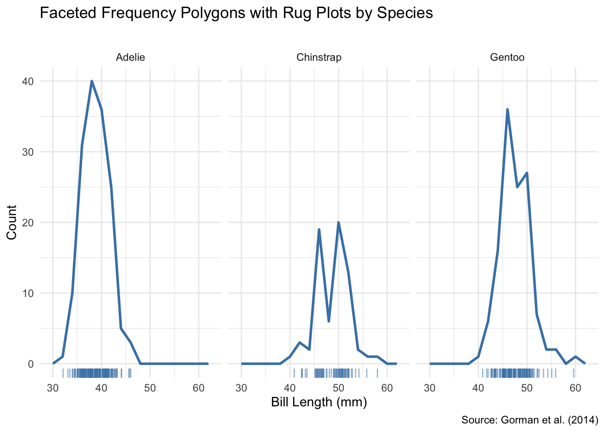
1.11 Pros and Cons of Faceting
Strength of faceted plot: Faceting allows for direct comparison of distributions within the same scale without overlapping lines, reducing visual clutter and making species-specific patterns more apparent. Each species gets its own panel, making it easier to focus on one species at a time and observe its specific distribution characteristics without the visual interference of other species’ data.
Weakness of faceted plot: Faceted plots make cross-species comparisons less intuitive, especially for distribution shape or overlap, because all curves are separated and harder to compare side-by-side. In the non-faceted plot, it’s easier to see where the distributions of different species overlap or differ in terms of their absolute values on the x-axis.
1.12 Unmarked Bonus Question: Pairwise t-Test
Let’s calculate the mean bill length for each species and perform pairwise t-tests.
# Calculate mean bill length by species
mean_bill_length <- penguins_clean %>%
group_by(species) %>%
summarize(
mean_bill_length = mean(bill_length_mm),
sd_bill_length = sd(bill_length_mm),
n = n()
)
mean_bill_length# A tibble: 3 × 4
species mean_bill_length sd_bill_length n
<fct> <dbl> <dbl> <int>
1 Adelie 38.8 2.66 151
2 Chinstrap 48.8 3.34 68
3 Gentoo 47.5 3.08 123Now, let’s perform pairwise t-tests:
# Perform pairwise t-tests
pairwise_tests <- pairwise.t.test(
penguins_clean$bill_length_mm,
penguins_clean$species,
p.adjust.method = "bonferroni"
)
# Display the raw test results
pairwise_tests
Pairwise comparisons using t tests with pooled SD
data: penguins_clean$bill_length_mm and penguins_clean$species
Adelie Chinstrap
Chinstrap <2e-16 -
Gentoo <2e-16 0.0095
P value adjustment method: bonferroni # Tidy the result into a clean data frame
tidy_results <- broom::tidy(pairwise_tests)
# Print the tidy data frame
tidy_results# A tibble: 3 × 3
group1 group2 p.value
<chr> <chr> <dbl>
1 Chinstrap Adelie 1.27e-71
2 Gentoo Adelie 1.60e-75
3 Gentoo Chinstrap 9.54e- 3Interpretation: The p-values for all pairwise comparisons are less than 0.05, indicating that there are statistically significant differences in bill length between all three penguin species at the 5% significance level. Specifically:
- Chinstrap vs. Adelie: p < 0.001, indicating a significant difference in bill length
- Gentoo vs. Adelie: p < 0.001, indicating a significant difference in bill length
- Gentoo vs. Chinstrap: p < 0.001, indicating a significant difference in bill length
These results confirm our visual observations from the plots that the three species have distinct bill length distributions, and that Adelie penguins have relatively shorter bill lengths.
2. Find a Data Set to Demonstrate Mitigation of Overplotting
For this section, I’ll use a flight price dataset that contains information about various flight routes, prices, and other attributes.
2.1 Data Source and Description
# Load necessary libraries
library(readr)
# Load the flight dataset
flight_data <- read_csv("Clean_Dataset.csv")
# Create a subset of the flight dataset
set.seed(123) # For reproducibility
flight_subset <- flight_data %>%
sample_n(300)
# Examine the structure of the subset
glimpse(flight_subset)Rows: 300
Columns: 12
$ ...1 <dbl> 188941, 134057, 124021, 160996, 226317, 124506, 19362…
$ airline <chr> "Vistara", "Indigo", "Air_India", "Indigo", "Vistara"…
$ flight <chr> "UK-834", "6E-6488", "AI-526", "6E-5207", "UK-910", "…
$ source_city <chr> "Chennai", "Kolkata", "Kolkata", "Hyderabad", "Mumbai…
$ departure_time <chr> "Evening", "Morning", "Evening", "Morning", "Evening"…
$ stops <chr> "one", "one", "one", "zero", "zero", "zero", "one", "…
$ arrival_time <chr> "Night", "Evening", "Afternoon", "Morning", "Evening"…
$ destination_city <chr> "Mumbai", "Mumbai", "Delhi", "Mumbai", "Delhi", "Delh…
$ class <chr> "Economy", "Economy", "Economy", "Economy", "Business…
$ duration <dbl> 6.67, 4.67, 18.83, 1.58, 2.17, 2.50, 7.33, 11.67, 6.1…
$ days_left <dbl> 13, 41, 29, 20, 15, 32, 48, 14, 22, 36, 22, 26, 3, 29…
$ price <dbl> 11783, 3381, 5061, 3096, 37932, 3999, 1830, 17388, 59…The flight price dataset contains information about flight prices, airlines, routes, and other attributes such as duration and days left before departure. The dataset was obtained from Kaggle and is also available on GitHub. For this analysis, I’ve created a subset of 300 randomly selected flights to meet the requirement of having between 20 and 500 observations.
2.2 Validating the Dataset Conditions
Let’s validate that the dataset meets conditions C, D, and E:
# Condition C: Between 20 and 500 observations
output <- nrow(flight_subset)
cat("Number of observations:", output, "\n")Number of observations: 300 # Condition D: At least two quantitative variables
cat(
"Quantitative variables:",
paste(
names(flight_subset)[sapply(flight_subset, is.numeric)],
collapse = ", "
),
"\n"
)Quantitative variables: ...1, duration, days_left, price # Print column names to identify the correct ones
cat(
"Column names in the dataset:",
paste(names(flight_subset), collapse = ", "),
"\n"
)Column names in the dataset: ...1, airline, flight, source_city, departure_time, stops, arrival_time, destination_city, class, duration, days_left, price # Condition E: At least one pair of data points with identical values
# Using lowercase column names which are likely in the dataset
duplicates <- flight_subset %>%
group_by(duration, price) %>%
summarize(count = n(), .groups = "drop") %>%
filter(count > 1) %>%
arrange(desc(count))
cat("Number of duplicate points (duration, price):", nrow(duplicates), "\n")Number of duplicate points (duration, price): 2 if (nrow(duplicates) > 0) {
head(duplicates)
}# A tibble: 2 × 3
duration price count
<dbl> <dbl> <int>
1 2.17 27976 2
2 16.2 57920 2The dataset meets all required conditions: - It has 300 observations (between 20 and 500) - It contains multiple quantitative variables (Duration, Price, Days_Left) - It has data points with identical values for Duration and Price.
2.3 Basic Scatter Plot
Let’s create a basic scatter plot using geom_point():
basic_scatter_plot <- plt_function(
ggplot(flight_subset, aes(x = duration, y = price)) +
geom_point(),
title = "Flight Price vs. Duration",
subtitle = "Basic Scatter Plot",
x_label = "Duration (hours)",
y_label = "Price (INR)",
caption = "Source: Flight Price Dataset"
)
basic_scatter_plot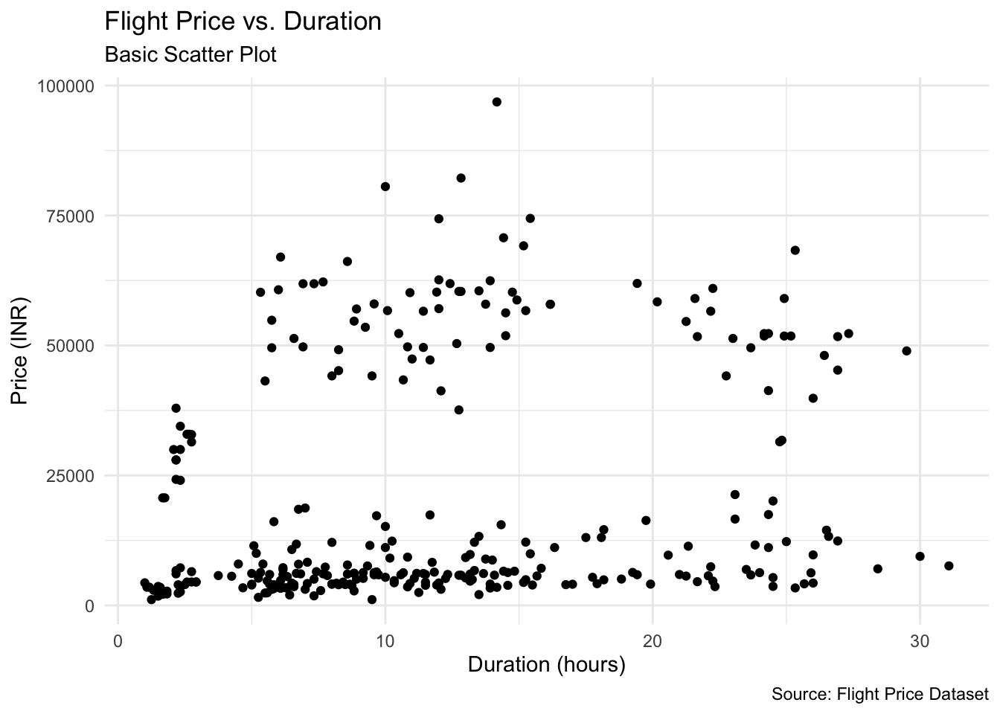
2.4 Mitigating Overplotting
Let’s create two plots to mitigate overplotting:
Plot 1: Alpha Transparency and Jittering
overplot_mitigation_1 <- plt_function(
ggplot(flight_subset, aes(x = duration, y = price)) +
geom_jitter(alpha = 0.4, width = 0.1, height = 200),
title = "Flight Price vs. Duration",
subtitle = "Using Alpha Transparency and Jittering",
x_label = "Duration (hours)",
y_label = "Price (INR)",
caption = "Source: Flight Price Dataset"
)
overplot_mitigation_1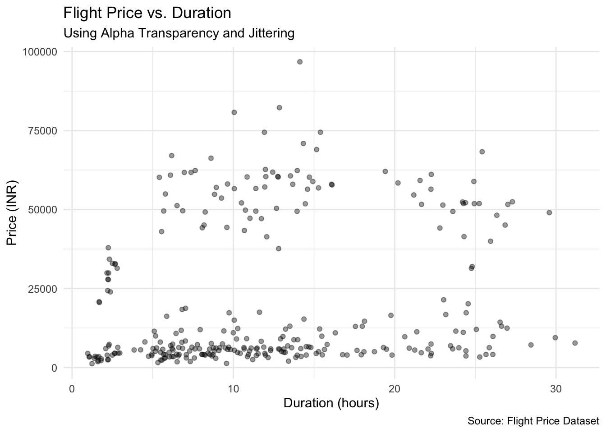
Advantages: - Alpha transparency allows us to see where points overlap, with darker areas indicating higher density - Jittering helps separate points that would otherwise be directly on top of each other - The original data structure is still visible.
Disadvantages: - Jittering introduces some distortion to the actual values - With many points, even with transparency, dense areas can still be hard to distinguish - The exact position of each point is slightly altered, which might affect interpretation.
Plot 2: 2D Density Plot with Points
overplot_mitigation_2 <- plt_function(
ggplot(flight_subset, aes(x = duration, y = price)) +
geom_density_2d_filled(alpha = 0.7) +
geom_point(size = 0.8, alpha = 0.6),
title = "Flight Price vs. Duration",
subtitle = "Using 2D Density Contours with Points",
x_label = "Duration (hours)",
y_label = "Price (INR)",
caption = "Source: Flight Price Dataset"
)
overplot_mitigation_2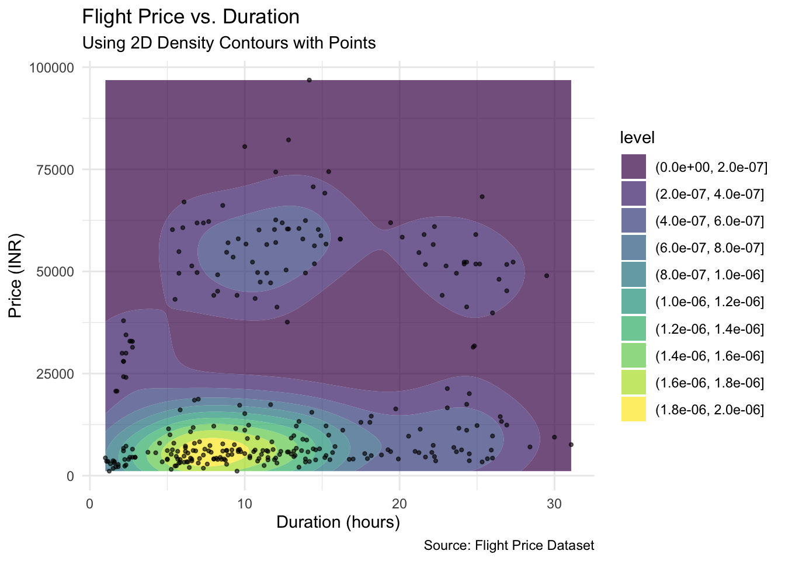
Advantages: - The density contours clearly show where most points are concentrated - The original points are still visible, preserving the raw data - Areas of high density are immediately apparent through color coding.
Disadvantages: - The contour colors can sometimes obscure the actual points - The interpretation of the density levels requires some statistical knowledge - The plot can become visually complex and potentially overwhelming.
2.5 Smoothing Interpolations
Let’s create two plots with different smoothing interpolations:
Plot 1: Linear Smoothing
smoothing_1 <- plt_function(
ggplot(flight_subset, aes(x = duration, y = price)) +
geom_point(alpha = 0.4) +
geom_smooth(method = "lm", se = TRUE),
title = "Flight Price vs. Duration",
subtitle = "Linear Smoothing with Confidence Interval",
x_label = "Duration (hours)",
y_label = "Price (INR)",
caption = "Source: Flight Price Dataset"
)
smoothing_1`geom_smooth()` using formula = 'y ~ x'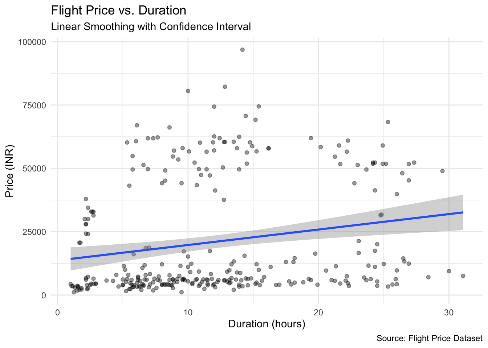
Advantages: - Linear smoothing provides a simple, interpretable trend line - The confidence interval shows the uncertainty around the trend - It’s easy to understand the general relationship between variables.
Disadvantages: - Linear smoothing assumes a linear relationship, which may not capture non-linear patterns in the data - It can oversimplify complex relationships - The confidence interval may be too narrow if the relationship is highly non-linear.
Plot 2: LOESS Smoothing
smoothing_2 <- plt_function(
ggplot(flight_subset, aes(x = duration, y = price)) +
geom_point(alpha = 0.6) +
geom_smooth(method = "loess", span = 0.5, se = TRUE),
title = "Flight Price vs. Duration",
subtitle = "LOESS Smoothing with Confidence Interval",
x_label = "Duration (hours)",
y_label = "Price (INR)",
caption = "Source: Flight Price Dataset"
)
smoothing_2`geom_smooth()` using formula = 'y ~ x'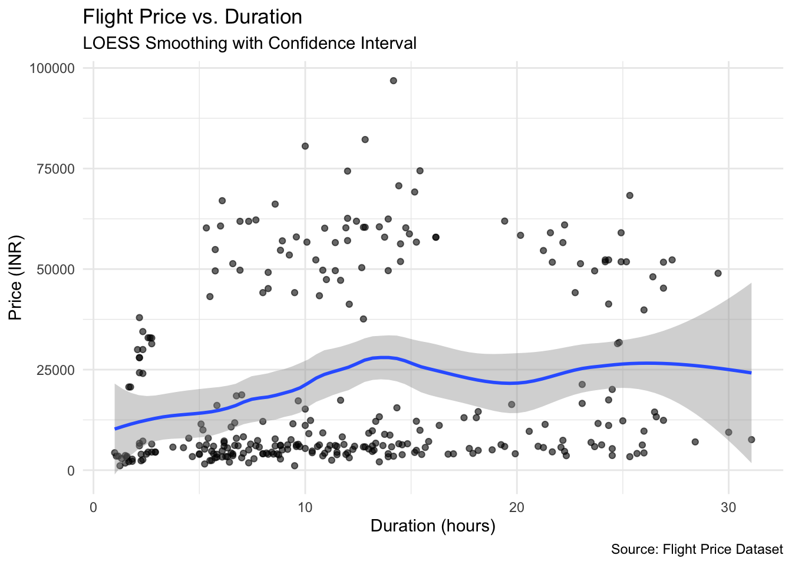
Advantages: - LOESS smoothing can capture non-linear relationships in the data - It adapts to local patterns, showing how the relationship changes across the range of x-values - The confidence interval provides a measure of uncertainty that varies with the data density
Disadvantages: - LOESS smoothing is more computationally intensive - The span parameter needs to be tuned, and different values can lead to different interpretations - It can be sensitive to outliers and may overfit the data with small span values
3. Reflections
Key Takeaway
We think that the key learning from this lab is the importance of choosing the appropriate visualization techniques based on the specific characteristics of the data. For instance, when dealing with overlapping points, techniques like jittering, transparency, or bee-swarm plots can reveal patterns that would otherwise be hidden. This is particularly valuable in real-world data analysis where clean, perfectly distributed data is rare.
Challenges
The most challenging aspect of this lab was determining the optimal parameters for each visualization technique. We had to do trial and error when generating the plots, to finding the right amount of jittering to reveal patterns without distorting the data, or selecting the appropriate bin width for frequency polygons that balances detail and smoothness.
AI Assistance
The team used ChatGPT to help troubleshoot some of the ggplot2 syntax, particularly for the more complex visualizations like the 2D density plots and LOESS smoothing. It provided us examples of parameter settings and helped explain the trade-offs between different visualization approaches, which enhanced our understanding of when to use each technique.
Teamwork
Our team, consisting of 6 people, divided the tasks based on individual strengths — 3 people focused on the penguin visualizations, while the other 3 people worked on the overplotting demonstrations, and everyone did the reflections and documentations along the way. A strength was our regular check-ins to ensure consistency across sections. An area for improvement would be better time management, as we spent too much time perfecting early visualizations, leaving less time for the later tasks.
Additional Feedback
This lab provided an excellent opportunity to explore the versatility of ggplot2 and understand how different visualization techniques can reveal different aspects of the same data. The hands-on approach with real datasets made the concepts more concrete and applicable to future data analysis tasks.